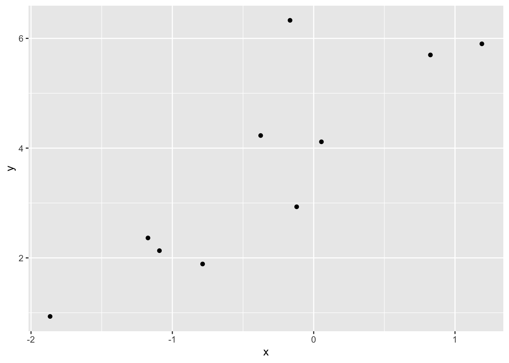
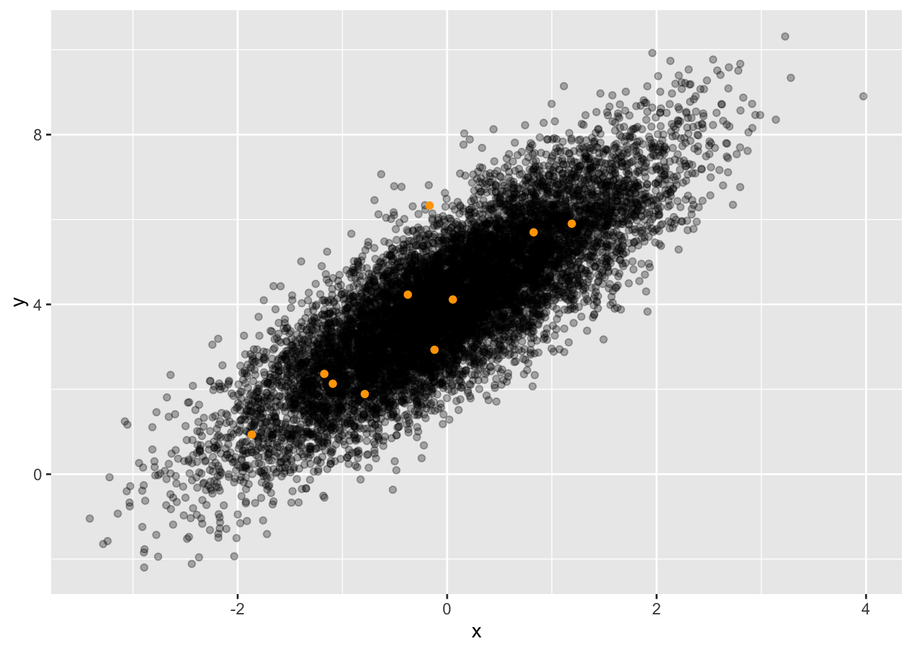

sample(dag01, size=2)# A tibble: 2 × 2
x y
<dbl> <dbl>
1 -0.326 2.84
2 0.552 5.04Imagine being transported back to June 1940 . You and your family might be sitting around a radio receiver, having just switched on set and waited for it to warm up in time to hear a news broadcast. I’ve selected a newscast for you, recording 103. The recording covers the surrender of the French in the face of the German invasion. Press the play button in the box below and listen.
There are many other recordings on the site which are worth listening to. I’m directing you to #103 as an example of a radio phenomenon: noise (or, in slang, “static”). You can clearly make out the spoken words from the recording. But there is also a background sound, something like the sound made by the act of crumpling paper.
Modern radio engineering has more-or-less eliminated noise, mainly by the use of digital technology. (Many of the recordings on the radio archive site have been “cleaned” so the noise is not so evident.) But if you have ever talked to a friend at a sporting event, you have probably had to shout to get your message over the noise of the crowd. At the receiving end, your friend intuitively filters out the noise (unless it is too loud) and recovers your words.
Engineers and others make a distinction between signal and noise. The signal is the spoken words of the 1940 broadcast, the noise is the hiss and clicks. You can intuitively separate the signal and the noise in this recording, focusing attention on the signal and ignoring the noise.
Separating signal from noise—or, at least trying to reduce the noise—is a common problem in all sorts of settings. Historically, statistics emerged from a confluence of two needs: i) the need to summarize the resources and activities of countries and states (whence comes the “stat” in “statistics”) and ii) the need to filter out noise so that the signal becomes clearer.
To illustrate the statistical problem of signal and noise, let’s turn to a DAG simulation: dag01. Here’s a sample from dag01:
sample(dag01, size=2)# A tibble: 2 × 2
x y
<dbl> <dbl>
1 -0.326 2.84
2 0.552 5.04The DAG simulation implements a relationship between x and y. In statistics, this relationship is the signal.
Look at the 2-row sample from the simulation and make a guess about what the relationship is.
Your guess will be exactly that: a guess. Any of an infinite number of possible relationships could account for the x and y data. The noise reduction problem of statistics is to make the guess as good as possible. For a sample of size \(n=2\), as good as possible is not very good!
To have a better shot at revealing the relationship hidden by the noise, we need more data, a bigger sample. Here’s a sample of size \(n=10\):
sample(dag01, size=10)# A tibble: 10 × 2
x y
<dbl> <dbl>
1 -0.786 1.89
2 0.0547 4.12
3 -1.17 2.36
4 -0.167 6.33
5 -1.87 0.933
6 -0.120 2.93
7 0.826 5.70
8 1.19 5.90
9 -1.09 2.13
10 -0.375 4.23 Looking carefully at the two rows of data you may be able to see some patterns. x is never larger than, say, 2 in magnitude and can be positive or negative. y is always positive. And notice that when x is negative, the corresponding y value is relatively small compared to the y values for positive x.
With the bigger sample size, \(n=10\) versus \(n=2\), we can make a more informed guess about the relationship between variables x and y.
Human cognition is not well suited to looking a long columns of numbers. Often, we can make better use of our natural human talents by translating the sample into a graphic, like this:

Collecting more data can make the relationship clearer. Here’s a graph of a sample of size \(n=10,000\) with the smaller \(n=10\) sample shown in orange:

x and y is evident graphically.There are many ways to describe the relationship between x and y indicated by the graph of the large sample. For instance, we can see that when x is positive, y is almost always greater than 4, but for negative x the value of y tends to be less than 4.
In this course, we prefer to make quantitative summaries of relationships. We do this by fitting models to the data. Here’s the relationship that’s shown by the original sample of 10:
lm(y ~ x, data = original) %>% coefficients() # size 10 sample(Intercept) x
4.262846 1.741758 The coefficients in this model correspond to the mathematical relationship \(y = 4.26 + 1.74 x\). On it’s own, this formula doesn’t tell us the extent to which we have filtered out the noise in the simulation.
With more data, say, the larger sample of \(n=10,000\), the relationship becomes more evident:
lm(y ~ x, data = larger) %>% coefficients() # size 10 sample(Intercept) x
4.008928 1.495904 Because these data come from a DAG simulation, we can look at the formulas to see exactly what relationship is behind the data:
print(dag01)[[1]]
x ~ eps()
[[2]]
y ~ 1.5 * x + 4 + eps()
attr(,"class")
[1] "list" "dagsystem"Comparing the two models to the DAG formula for y, we can see that the larger sample produced coefficients that are much closer to the formula than did the smaller sample. Closer, but not exactly the same. Even in the coefficients calculated from the large sample, there is still a legacy of the noise in the original relationship.
The lesson here is simple: More data can give a better view of the relationships.
The challenge we face when working with data generated in the real world is that it is not often possible to open the black box that generated the data; all we have is the data! So how can we tell whether the data we have at hand are sufficient for giving a faithful description of the actual relationships?
The general idea is to use the variation within the sample to accomplish two things at once: i. make a description of the relationship, and ii. estimate how much inherited noise there is in the description. The result of (ii) is important, since it can tell us whether or not our description (i) is good enough for the purpose we seek to serve.
To get started, let’s explore how to measure the amount of variation in the data. This can give us an idea of the size of the overall signal+noise, which we will do in the next section of this Lesson. In Lesson 22 we will use DAG simulations to get an idea of how to estimate the amount of inherited noise in the description of the relationship. The DAG simulation is useful because we have access to the internal mechanism of the DAG, so it is easy to see how close the description is to the actual relationship.
In Lesson 23, we will take off the DAG training wheels and learn how to estimate the size of the inherited noise in the description directly from data, without having to open the black box of the mechanism that generated the data. If you think about it, it is an amazing claim that we can estimate how close our data-driven description is to the actual mechanism, without having to know the actual mechanism!
We already know the standard way to measure variation in a single variable: the variance or, equivalently, the standard deviation, which is simply the square root of the variance.
Perhaps you are wondering why there are two standard ways to measure variation, when each can be calculated from the other? The variance can be found by squaring the standard deviation, the standard deviation by taking the square root of the variance. Either will do, so why both?
The answer to this question is illustrated by a bit of geometry: the mathematics of right triangles and the corresponding Pythagorean relationship among the sides of the triangle: \(A^2 + B^2 = C^2\). The quantities \(A\), \(B\), and \(C\) are the lengths of the edges of the right triangle. The quantities \(A^2\), \(B^2\) and \(C^2\) are the lengths-squared of those edges. In order to calculate the length of one edge given the lengths of the others, we need first to square the lengths. Having squared them, we can easily do the calculation of the length-squared of the unknown edge. Then, we take the square root of the length-squared to find the length of the edge.
Lengths are like standard deviations, lengths-squared are like the variance. Where does the right triangle fit in? The overall variation in the response variable is like the hypothenuse of a right triangle. One of the other two edges represents the noise in the relationship. The other edge represents the signal: the relationship itself. It’s easy to measure the overall variation in the response variable. We can also measure the noise, but indirectly. First, we fit a model connecting the response variable to the explanatory variable(s). Then the variation of the residuals for that model are the estimate for the noise.
Our first illustration will use data from dag01. We will arbitrarily set the sample size to \(n=10,000\). (In Lesson 22, we will look at the impact of sample size on the results.)
Dag_data <- sample(dag01, size=10000)Now measure the variation in x and y in the standard way:
Dag_data %>%
summarize(sx = sd(x), sy = sd(y), vx = var(x), vy = var(y))# A tibble: 1 × 4
sx sy vx vy
<dbl> <dbl> <dbl> <dbl>
1 0.998 1.81 0.995 3.29The size of the x variation is about 1. The size of the y variation is about 1.7. (We’re using the standard deviation to measure the size of the variation.
Look again at the formulas that compose dag01:
print(dag01)[[1]]
x ~ eps()
[[2]]
y ~ 1.5 * x + 4 + eps()
attr(,"class")
[1] "list" "dagsystem"From the formula for x we can see that x comes from a random number generator, eps(). The eps() generator is designed to generate noise of size 1 by default.
As for y, the formula includes two sources of variation:
y determined by x, that is \(y = \mathbf{1.5 x} + \color{gray}{4 + \text{eps()}}\)y, that is \(y = \color{gray}{\mathbf{1.5 x} + 4} + \color{blank}{\mathbf{eps(\,)}}\)The 4 in the formula doesn’t add any variation to y; it’s just a number.
Let’s measure variation using the standard deviation: We already know that eps() generates variation of size 1. So the amount of variation contributed by the + eps() term in the DAG formula is 1. The remaining variation is contributed by 1.5 * x. The amount of variation in x is 1, coming from the eps() in the formula for x. A reasonable guess is that 1.5 * x will have 1.5 times the variation in x. So, the variation contributed by the 1.5 * x component is 1.5. The overall variation in y is the sum of the variations contributed by the individual components. This suggests that the variation in y should be \[\underbrace{1}_\text{from eps()} + \underbrace{1.5}_\text{from 1.5 x} = \underbrace{2.5}_\text{overall variation in y}.\] Simple addition! Unfortunately, the result is wrong. In the previous summarize() of the Dag_data, we measured the overall variation in y as about 1.72.
Let’s try again, this time using the variance as our measure of variation.
Since eps() generates variation whose standard deviation is 1, the variance is simply \(1^2 = 1\). The variance of x is therefore 1, as is the variance of the eps() component of y.
What’s the variance of 1.5 * x? It turns out to be \(1.5^2\, \text{var(}\mathit{x}\text{)} = 2.25\). Adding up the variances from the two components gives
\[\text{var(}\mathit{y}\text{)} = \underbrace{2.25}_\text{from 1.5 eps()} + \underbrace{1}_\text{from eps()} = 3.25\]
This result, that the variance of y is 3.25, is a close match to what we found in summarizing the y data generated by the DAG. And, of course, \(\sqrt{3.25} = 1.80\), which is what we found by calculating the standard deviation of the y directly from the data.
The lesson here: When adding two sources of variation, the variances of the individual sources add to produce the overall variance of the sum. Just like \(A^2 + B^2 = C^2\).
In modeling data from dag01 we could recover the DAGs formula for y.
sample(dag01, size=10000) %>%
lm(y ~ x, data = .) %>%
coefficients()(Intercept) x
3.996846 1.494939 It is wrong to think that from data we can determine the DAG that generated the data. It’s only if we know the structure of the data-generation DAG that we can recover the mechanism inside that DAG. But another statistical thinker might claim that what’s behind the data is y causing x. Based on this assumption, she also can find the mechanism inside her hypothesized DAG:
sample(dag01, size=10000) %>%
lm(x ~ y, data = .) %>%
coefficients()(Intercept) y
-1.8485902 0.4635813 A DAG is a hypothesis, a statement that might or might not be true. DAGs are part of the statistical apparatus for thinking responsibly about causality. You use a DAG—or, potentially, multiple DAGs—when the issue of what causes what is relevant to your work.
When there are only two variables involved in the system under consideration—we’ll call them X and Y for simplicity—there are only two possible DAGs:
\[X \rightarrow Y\ \ \ \ \ \text{and}\ \ \ \ \ X \leftarrow Y\]
Often, but not always, our understanding of the world allows us to focus on one of these and not the other. Example: Does the rooster crowing cause the sun to rise, or does the rising sun cause the rooster to crow? That’s a pretty easy question if you know how things work.
But there are additional DAG possibilities that can account for the relationship between x and y. For instance, if we introduce another quantity, c in between x and y, four other DAGs need to be considered:
\[X \rightarrow C \rightarrow Y \ \ \ \ \ \text{and}\ \ \ \ \ X \leftarrow C \leftarrow Y \ \ \ \ \ \text{and}\ \ \ \ \ X \leftarrow C \rightarrow Y \ \ \ \ \ \text{and}\ \ \ \ \ X \rightarrow C \leftarrow Y\]
Actually, there are many other configurations of DAGs involving three variables. To keep things simple, we’ll restrict things to DAGs where X might or might not cause Y, but Y never causes X. (We don’t lose anything from this restriction because you get to make the choice of what real-world variable correspond to X and which one to Y.) Figure 3.2 shows the 10 configurations of 3-variable DAGs where Y doesn’t cause X.

The statistical thinker, with the conceptual tool of DAGs at, can consider multiple possibilities for what might cause what. Sometimes she will be able to discard some of the possibilities based on common sense. (Think: roosters and the sun.) But other times there may be possibilities that she doesn’t favor but which nonetheless might be plausible to other people. In Lesson 28 we will explore how each configuration of DAG has implications for which model formulas can or cannot reveal the hypothesized causal mechanism.